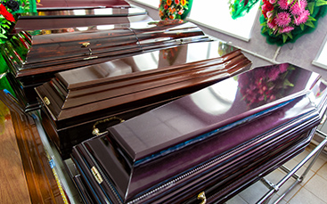

Świadczymy następujące usługi pogrzebowe:
-

Transport
-

Trumny, urny
-
Organizacja pogrzebu
-
Klepsydry, tabliczki
-
Wieńce, wiązanki
-

Zasiłek pogrzebowy
Na naszej stronie znajdą Państwo wzory dokumentów do wypełnienia, niezbędnych do zlecenia nam czynności związanych z przygotowaniem pogrzebu:
Od blisko 30 lat towarzyszymy Państwu w trudnych chwilach, kiedy odchodzi ktoś bliski. Mogą Państwo liczyć na naszą pomoc i wsparcie na każdym etapie przygotowania pogrzebu. Dokładamy wszelkich starań, aby każdy pochówek odbywał się z godnością i należytym szacunkiem.
Przez lata istnienia ugruntowaliśmy naszą pozycję na pasłęckim rynku usług pogrzebowych. Dziękujemy Państwu za zaufanie, jakie okazujecie powierzając nam organizację pochówku swoich bliskich.
Janina Cieśla
Właściciel
Współpracujemy z doświadczonym Mówcą Pogrzebowym, specjalizującym się w prowadzeniu modlitw w kaplicy pogrzebowej oraz organizacji świeckich ceremonii pogrzebowych.
ul. Mickiewicza 35
14-400 PASŁĘK
pon. - pt.: 8:00 - 17:00
sob.: 9:00 - 13:00
Przy Zakładzie Pogrzebowym prowadzimy sklep z dewocjonaliami, w którym znajdą Państwo wszelkie niezbędne produkty i akcesoria do organizacji pogrzebu, takie jak odzież pogrzebowa, modlitewniki, różańce, obrazki ze świętymi.